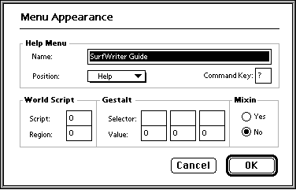

Other Utilities
When you create or open a guide file, three menu items--Import Resources, Export Guide File, and Menu Appearance--become available in the Utilities menu (see Figure 5-7).Importing and Exporting Resources
You can use the Import Resources command to add resources to your guide file, and you can use the Export Guide File command to export the resources in your guide file. These two menu items are especially helpful when you debug your guide file. For example, you usually import resources using the <Resource> command, but to reimport resources quickly without compiling again, use the Import Resources command.Specifying Guide File Information
You can use the Menu Appearance command to modify information about your guide file that you usually set in your source file using Guide Script commands. The Menu Appearance command displays a dialog box (see
Figure 5-8) which you can use toFigure 5-8 The Menu Appearance dialog box
- modify the attributes that determine how your guide file appears in the Help menu
- change the WorldScript, Gestalt, and mixin information in your guide file

Usually you define these settings in your source files using the <Help Menu>, <World Script>, <Gestalt>, and <Mixin> Guide Script commands. If you don't, or if you want to modify the settings you specified in your source files, use the Menu Appearance command. (For information about these commands, see the chapter "Guide Script Command Reference.")
To override information that already exists in your guide file, type in the new information in the Menu Appearance dialog box and click the OK button. To add new information to your guide file, type in the new setting in the Menu Appearance dialog box and click the OK button. To apply these settings to your open guide file, choose Save from the File menu.
If you recompile the guide file, the settings in the Menu Appearance dialog box are updated with the settings specified in your source files. If your source files do not specify settings for the Help menu, WorldScript, Gestalt, or mixin attributes, the settings in the Menu Appearance dialog box remain as previously set.